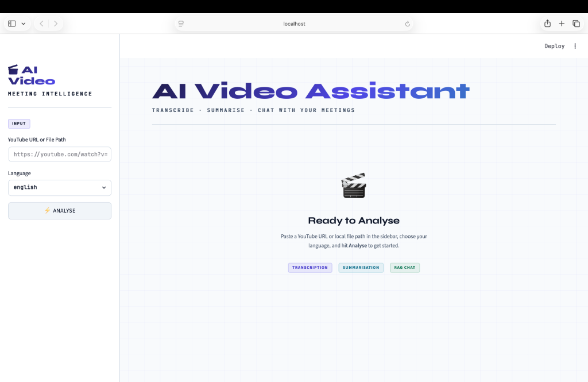

Transform Video Meetings into Structured Intelligence.
Ingest any YouTube URL or audio/video file. Automatically generate executive summaries, action items, key decisions, and chat interactively with your transcript using local vector search.
streamlit run app.py

Screen 1: Ingestion Sidebar, Language Selector (English/Hinglish), and Ready to Analyse State.
Engineered for Deep Meeting Intelligence
From multi-gigabyte audio extraction to semantic vector search, every layer is built for accuracy and speed.
Dual Speech Recognition
Local OpenAI Whisper handles clear English audio, while Sarvam AI transcribes and translates Hinglish/Hindi speech to English using optimized 16kHz mono audio slices.
Whisper · Sarvam AI APIMap-Reduce Summaries
Splits large transcripts into overlapping chunks, generates partial summaries, and synthesizes an executive multi-bullet meeting breakdown with automated titles.
Mistral AI · Map-Reduce ChainAction Items & Decisions
Automatically isolates tasks with owners and deadlines, records key agreements, and surfaces unresolved questions requiring follow-up.
Structured ExtractionChromaDB Vector Store
Embeds transcripts using sentence-transformers/all-MiniLM-L6-v2 for instant, low-latency semantic similarity search across hours of video recordings.
Chat with your Meeting
Interactive RAG pipeline answers specific questions strictly from verified transcript context, preventing generic LLM hallucinations.
LangChain LCEL RAG429 Rate-Limit Shield
Integrated invoke_with_retry wrapper with exponential backoff ensures pipeline stability under strict free-tier Mistral AI and Sarvam AI quotas.
5-Stage Execution Flow
How raw YouTube links or local MP4/WAV files turn into actionable answers.
Audio Ingestion
yt-dlp downloads YouTube audio. pydub converts local media to 16kHz mono WAV chunks.
Dual STT
English routed to Whisper; Hinglish sliced to 25s pieces for Sarvam translation with retries.
LLM Synthesis
Mistral AI generates an 8-word Title, multi-bullet Summary, Action Items, and Key Decisions.
Vector Indexing
Transcript chunks embedded via HuggingFace MiniLM and indexed into ChromaDB vector store.
Interactive Chat
Streamlit UI allows natural language Q&A retrieved strictly from vector context in real-time.
Run in 2 Simple Steps
Launches the modern web dashboard on localhost:
streamlit run app.py
Accessible at: http://localhost:8501
Run directly in your command line with an interactive chat loop:
python main.py
Prompts for YouTube URL / file path in terminal.
Project Resources & Downloads
All documentation, presentation slides, and source code packages ready to export.